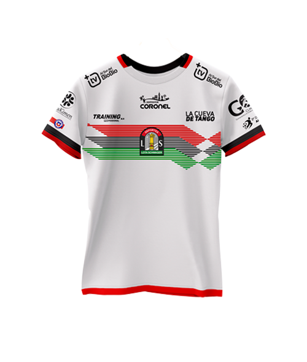

El Club de Deportes Lota Schwager - Un poco de Historia -
Fue fundado el 10 de mayo de 1966, gracias a la fusión de los equipos del Campeonato Regional de Fútbol, Minas Lota y Federico Schwager, representantes de las empresas carboníferas, Schwager y Lota respectivamente. Jugó ese mismo año en la Segunda División, obteniendo un 9º lugar. Bajo la dirección técnica de Juan Jenaro, Lota Schwager ascendió en el año 1969, luego de tres temporadas en Segunda, consigue su primer título en el profesionalismo, lo que le valió su primer ascenso a la Primera División. Se mantuvo en Primera División hasta 1980, año en que el club terminó en lugar 16º entre 18 equipos participantes, lo cual significó su regreso a Segunda División. En 1986, y bajo la dirección técnica de Juan Carlos Gangas, volvería a la división de honor tras coronarse como campeón de la segunda categoría, pero solo estaría en Primera en 1987, año en el que descendió nuevamente.
Tercera División de Chile (clic en la imagen)

